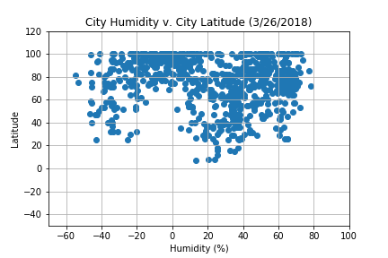

Humidity
In this project, we used Python script to visualize weather in over 500 cities across the world. The locations were all varying and random distances from the equator. In order to complete this analysis, we used data published from a free API called "OpenWeatherMap".
Once the data was retrieved, we used the libraries Pandas and Matplotlib. With Pandas, we were able to generate dataframes to organize the data. After these were completed, we used Matplotlib in order to create two-dimensional scatter plots to measure Latitude city locations with Temperature, Wind Speed, Humidity, and Cloudiness. This website will show the data from OpenWeatherMap, visualizations created for this analysis, also trends and correlations observed.